Laundry Mountain · app review
Working visual baseline, 7 October 2026. The original board remains the reference. The owner approved the active climb direction; the updated home and full overview are revisions for review. Landing is rejected and parked.
The original reference
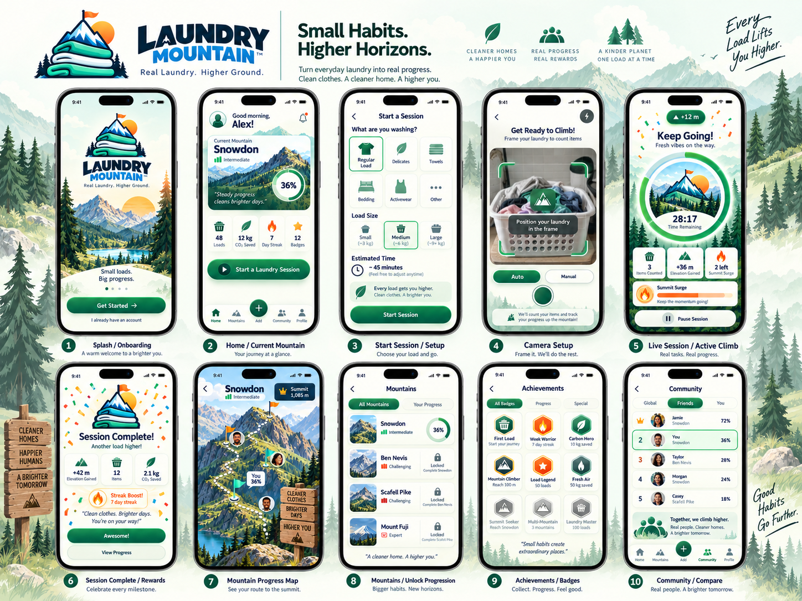
Mountain presentation
Natural home scenery and the earlier dimensional basket; the approved outlined basket in the active climb. Both use the same saved Laundry Metres. The overview retains measured geography, with revised material sampling, a lighter route and smaller markers.
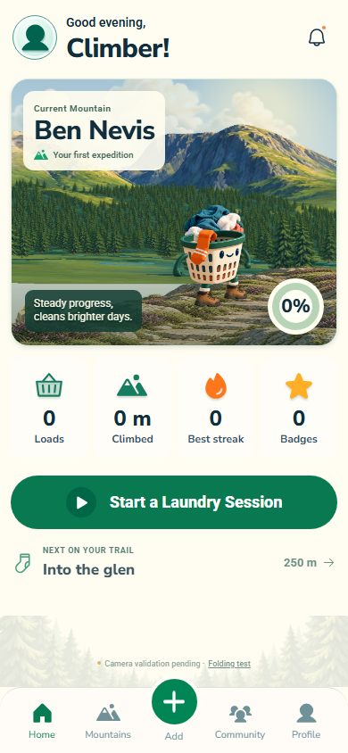
Home · genuine zero progress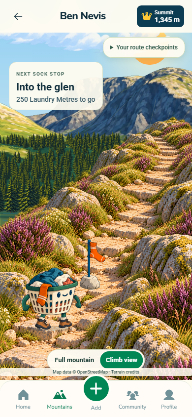
Climb · retained direction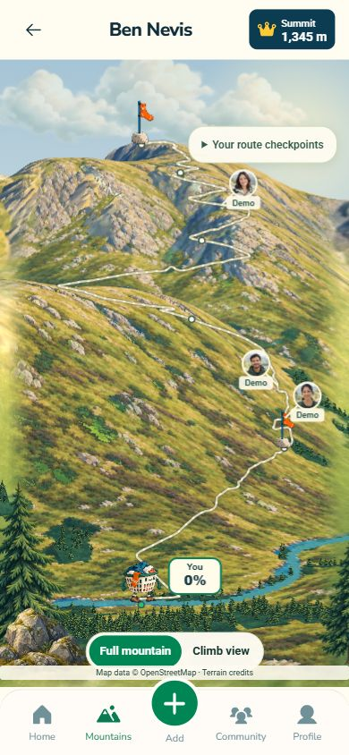
Full mountain · updated, awaiting review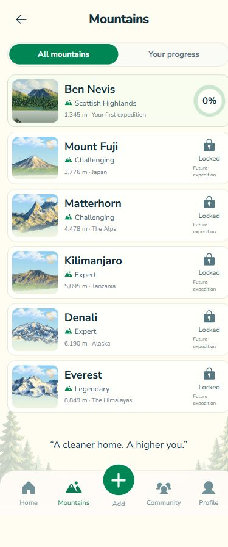
Six agreed mountains · later five are locked previewsStart and prepare
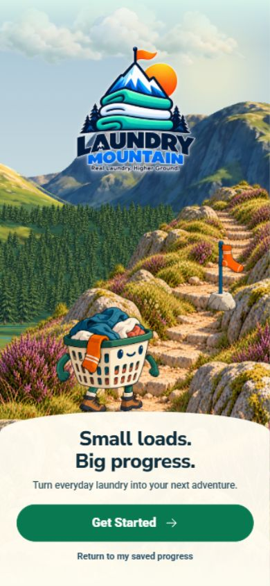
Welcome Load setup
Load setup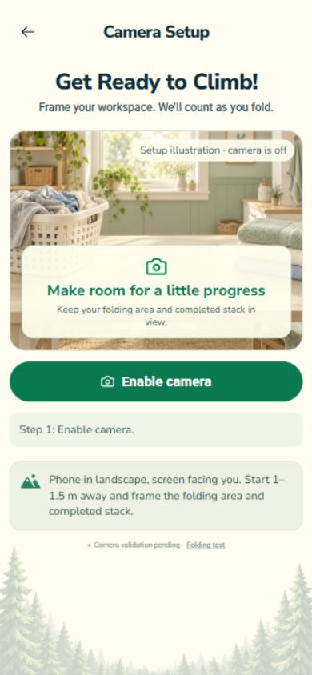
Camera setup · camera off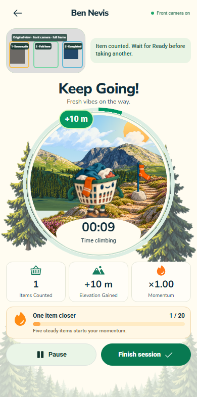
Live · isolated synthetic camera fixtureProgress and return
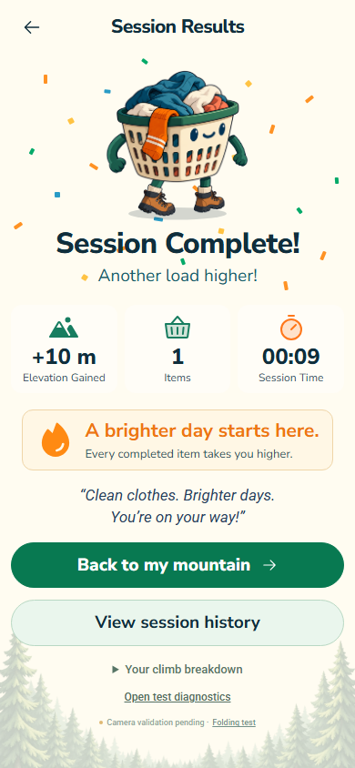
Results · one synthetic event, not physical laundry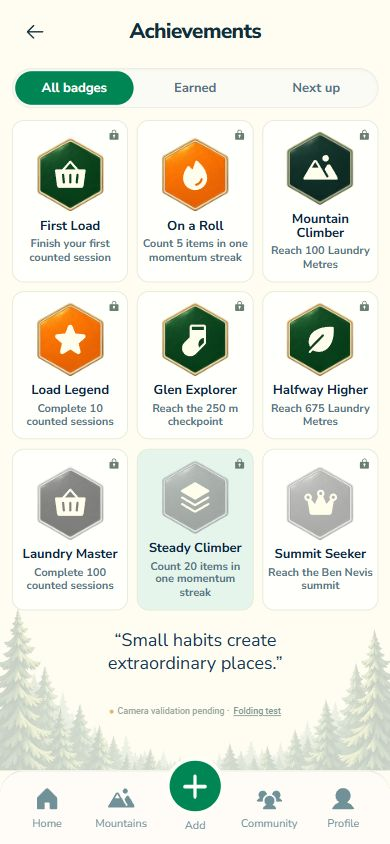
Achievements · real requirements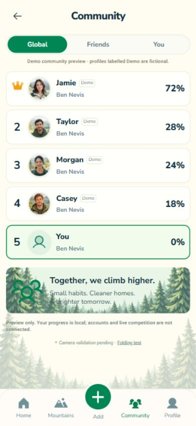
Community · clearly labelled fictional profiles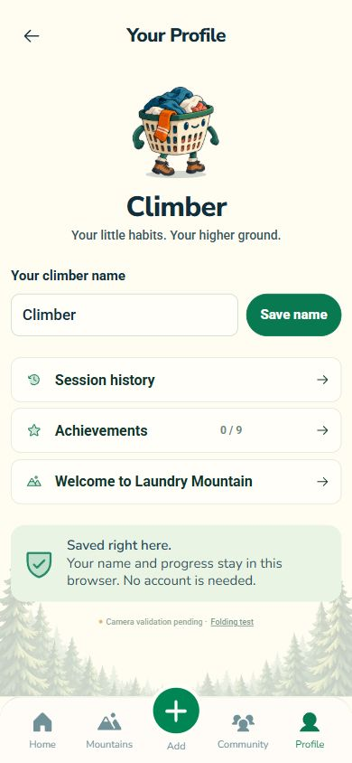
Profile · local persistencePhone landscape
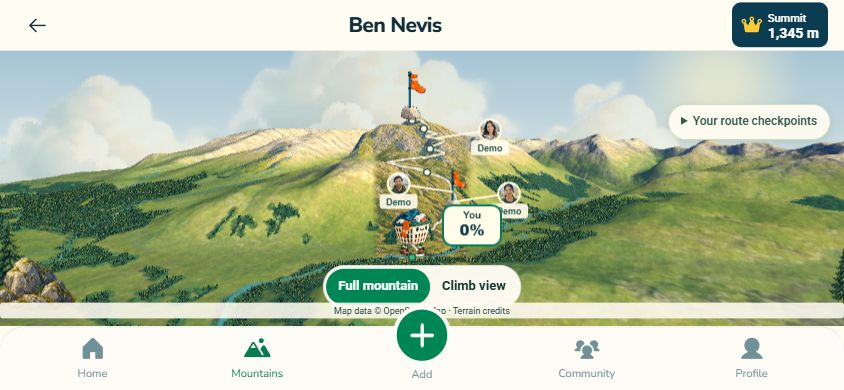
Overview route and controls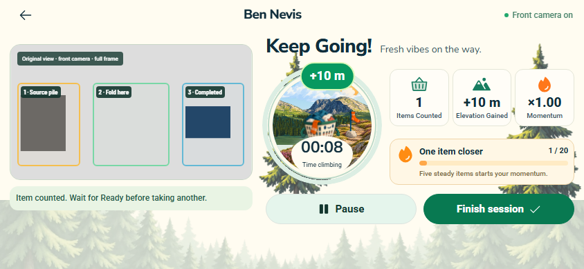
Live session · isolated synthetic fixture
Still unverified: physical folding accuracy and real-phone performance. The last actual Pixel test counted zero. Browser checks do not establish visual approval or physical acceptance. No deployment.